📸 Baza Szkoły – galeria
Zajrzyj do naszych pracowni, sal i przestrzeni szkolnych. Profesjonalny sprzęt, nowoczesne warunki i atmosfera, która inspiruje do mistrzostwa.
80-lecie szkoły
Jubileusz 80-lecia naszej szkoły był wyjątkowym wydarzeniem, które połączyło pokolenia uczniów, nauczycieli i absolwentów. To historia wielu mistrzów, którzy zaczynali swoją drogę właśnie tutaj. Tradycja zobowiązuje – dlatego dalej kształcimy kolejne pokolenia w Szkole Mistrzów.
_03_28_2026.webp)
_03_28_2026.webp)
_03_28_2026.webp)
_03_28_2026.webp)
Pracownia cukierniczo-gastronomiczna
Nowoczesna pracownia, w której uczą się przyszli kucharze, cukiernicy, piekarze i kelnerzy. Pracujemy na profesjonalnym sprzęcie wysokiej klasy, takim jak w prawdziwej gastronomii. Tutaj zaczyna się droga do mistrzostwa w zawodach gastronomicznych.


Pracownia fryzjerska
Pracownia fryzjerska dedykowana Antoniemu Cierplikowskiemu – jednemu z największych mistrzów fryzjerstwa w historii. Nowoczesny sprzęt, profesjonalne stanowiska pracy i współpraca z topowymi markami fryzjerskimi. Rozwijamy także fryzjerstwo naturalne we współpracy z CulumNATURA. Tu uczysz się zawodu w prawdziwych warunkach – w Szkole Mistrzów.


Pracownia handlowa
Uczniowie w zawodzie sprzedawca oraz technik handlowiec uczą się w pracowni odwzorowującej realne warunki pracy w handlu. Przygotowujemy do egzaminów zawodowych i prawdziwej pracy w branży. Praktyka, doświadczenie i konkretne umiejętności – czyli droga do mistrzostwa w handlu.


Sala gimnastyczna
Świeżo wyremontowana sala gimnastyczna i rozwijająca się baza sportowa pozwalają naszym uczniom dbać o zdrowie i kondycję. Korzystamy także z Aquaparku przy ul. Borowskiej oraz zajęć na lodowisku i rolkach przy ul. Spiskiej. W Szkole Mistrzów dbamy nie tylko o zawód, ale także o zdrowie i rozwój fizyczny.


Szkoła – budynek i sale lekcyjne
Nasza szkoła mieści się w zabytkowym, klimatycznym budynku z ponad stuletnią historią. To miejsce z charakterem, które nieustannie modernizujemy i rozwijamy, tworząc coraz lepsze warunki do nauki zawodu i zdobywania wiedzy. Tradycja i nowoczesność spotykają się tutaj – w Szkole Mistrzów.
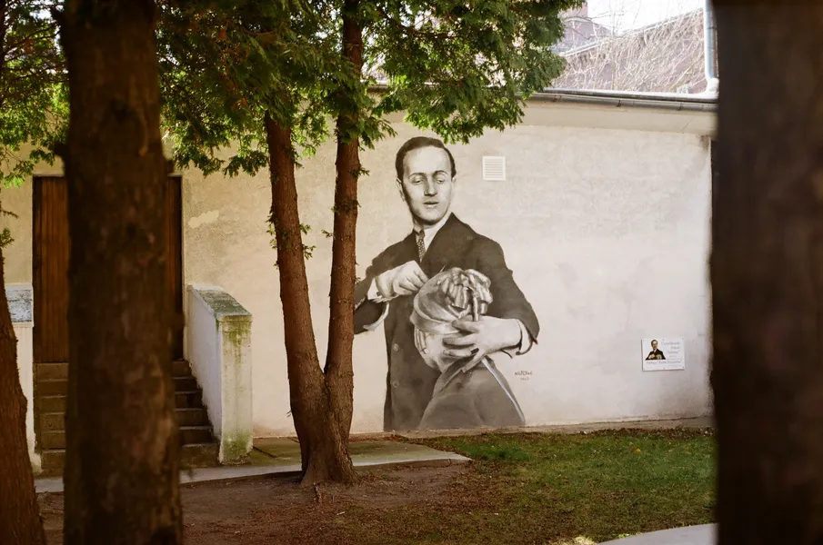
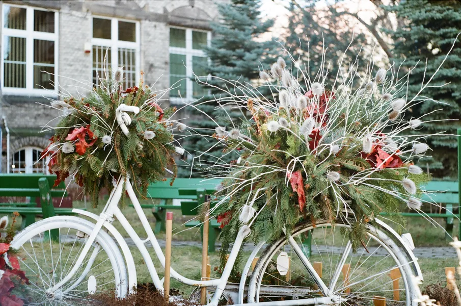
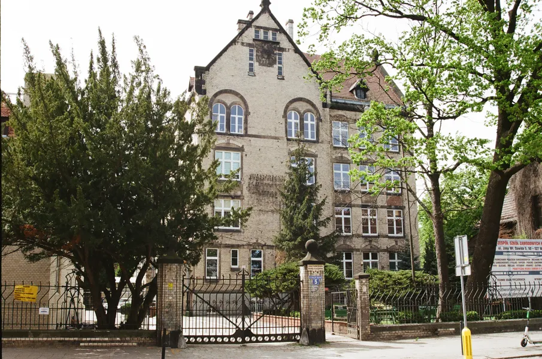
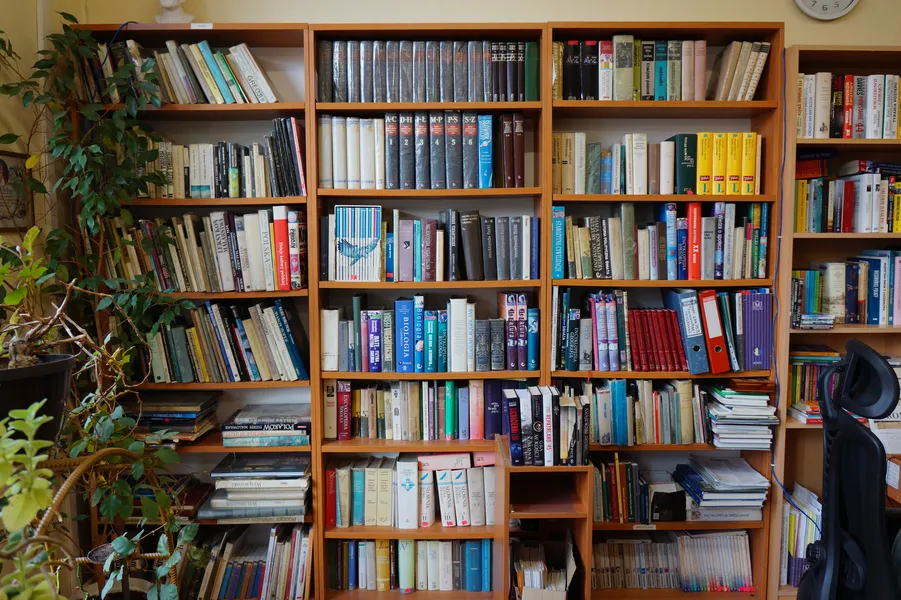
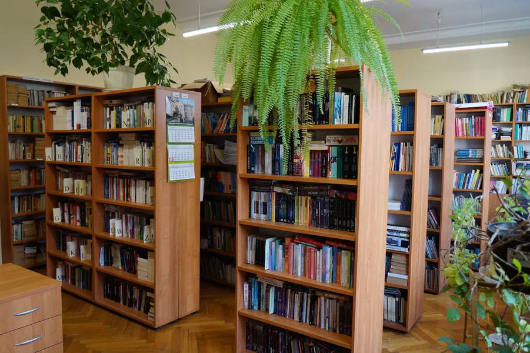
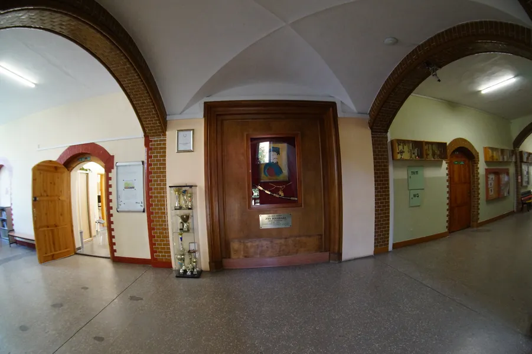
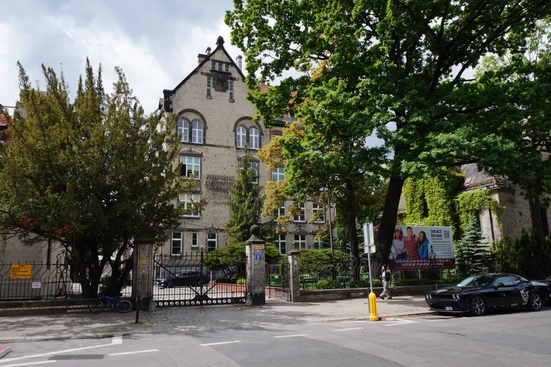
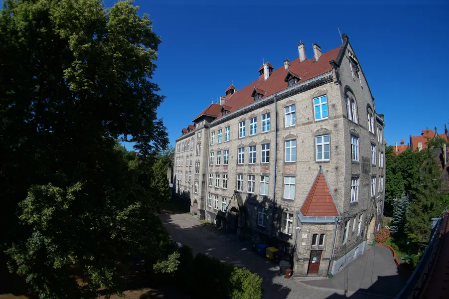
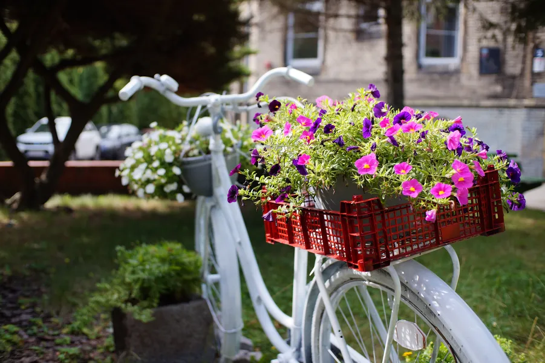
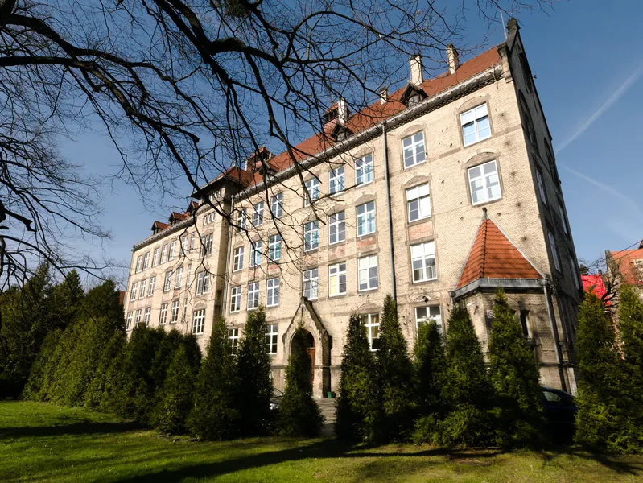
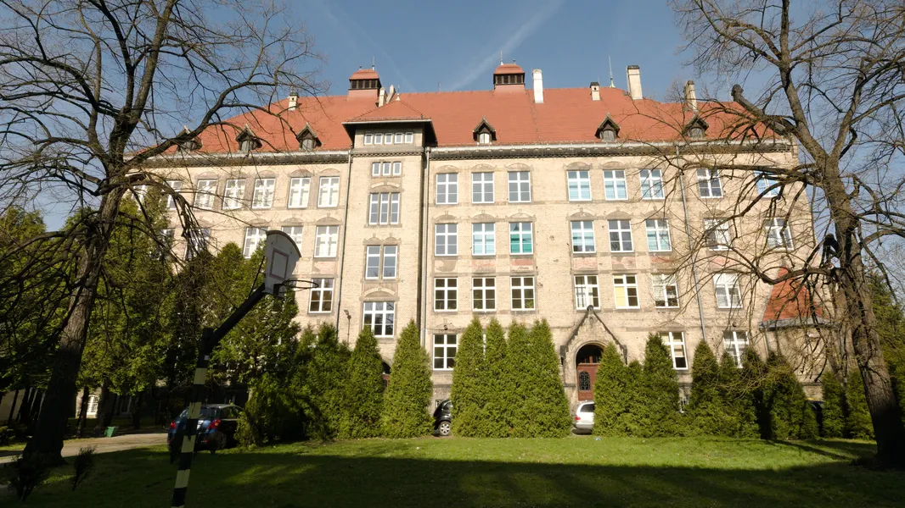

Turniej na Najlepszego Ucznia w Zawodzie Cukiernik i Piekarz
Ogólnopolski Turniej na Najlepszego Ucznia w Zawodzie Cukiernik i Piekarz to wydarzenie z wieloletnią tradycją – w 2026 roku odbywa się już XXXI edycja. Do naszej szkoły przyjeżdżają najlepsi uczniowie z całej Polski, by rywalizować o tytuł mistrza. To konkurs, który doskonale pokazuje, że Zespół Szkół Zawodowych nr 5 to prawdziwa Szkoła Mistrzów.